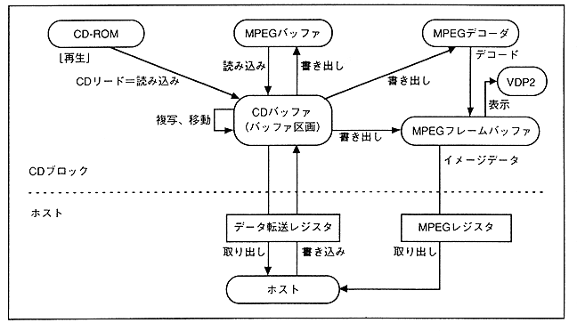

The main functions of the CD-ROM system are as follows.
- Select stream
- Parallel processing
- MPEG function
Play video
Still image playback (high definition, JPEG)
Window function
Visual effects function
(Mosaic, Blur, Chroma Key, Fade In / Fade Out)
Branch playback function
Pause, freeze, frame advance, slow playback
MPEG buffer function
The CD-ROM system temporarily stores the data read from the CD-ROM in the CD buffer. The stored data is written to and read from MPEG and the main system according to commands from the main system.
The data flow of the CD-ROM system is shown in Figure 3.29.
Figure 3.29 CD-ROM system data flow
